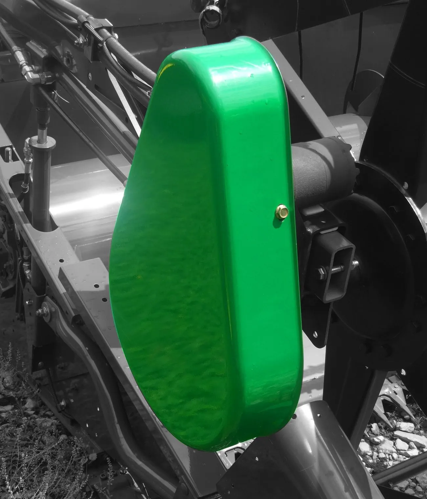
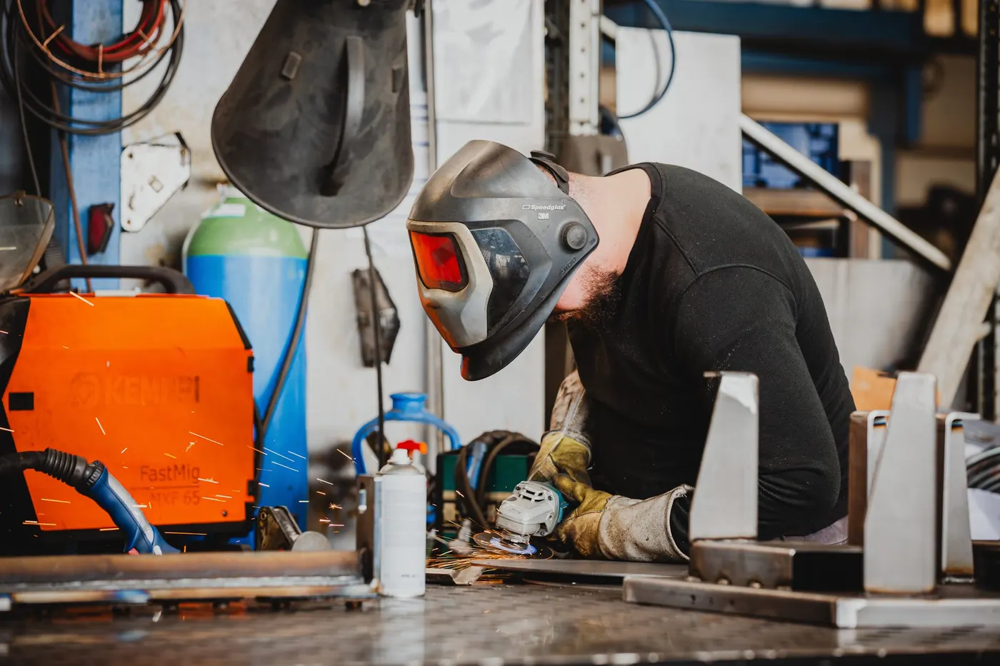
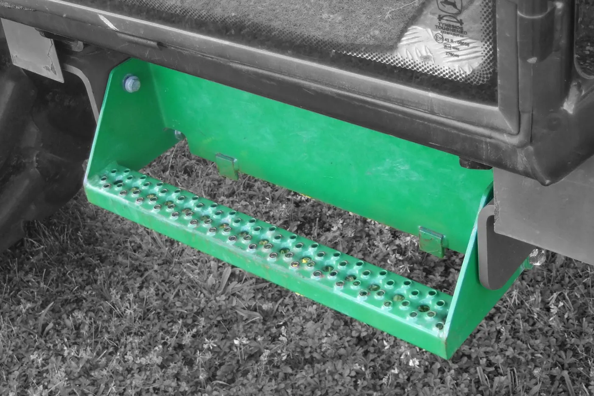
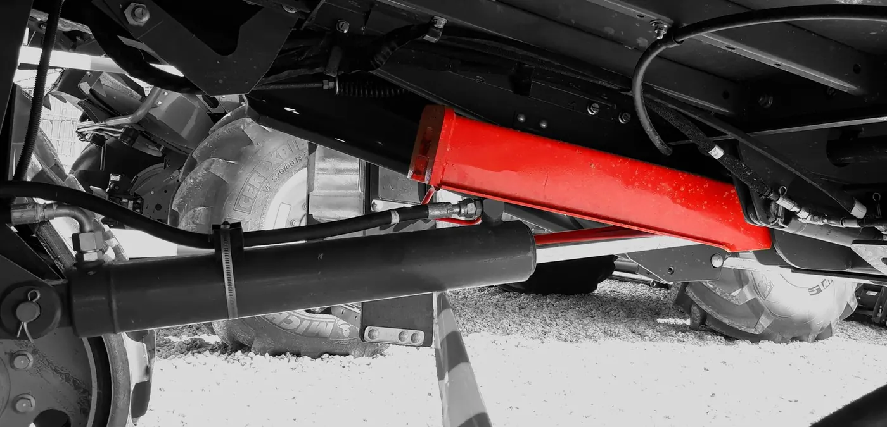
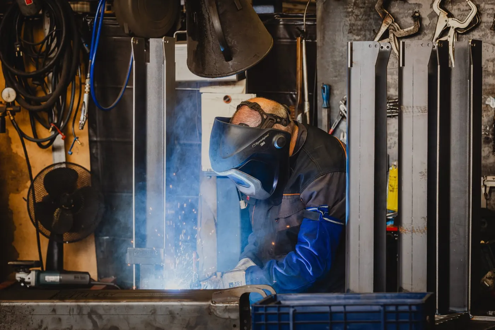

Schweißbaugruppen
Rahmen, Konsolen, Aufnahmen und Verkleidungen als fertiges Stück.
Geschnitten, gekantet, geschweißt — bei uns im Haus. Damit aus einzelnen Blechteilen eine Baugruppe wird, die Sie nur noch montieren müssen.
Schweißen ist bei uns kein eigener Auftrag, sondern der Schritt, der die Teile verbindet. Weil Zuschnitt und Kanten aus derselben Halle kommen, passen die Teile beim Heften bereits zusammen — das erspart das Richten hinterher.

Zwei Teile werden eines. Geheftet wird in der Vorrichtung, damit sich beim Schweißen nichts verzieht.
Naht

Zuschnitt und Kante kommen aus derselben Halle. Darum passen die Teile beim Heften schon zusammen.
Rahmen, Konsolen, Aufnahmen und Verkleidungen als fertiges Stück.
Wiederkehrende Baugruppen bekommen eine Aufnahme, damit das zehnte Teil wie das erste aussieht.
Verzug wird gerichtet, bevor das Teil die Halle verlässt.
Entgraten, Schleifen, Vorbereiten für die Beschichtung.
Serien, bei denen sich eine eigene Fertigungsstraße nicht rechnet.
Maße und Sichtprüfung nach unserem Qualitätsmanagement.



Was Einkäufer und Konstrukteure uns zu Schweißen am häufigsten fragen — beantwortet von den Leuten, die die Maschine fahren.
Ihre Frage steht nicht dabei?
Anrufen: 08772 803707Stahl, Edelstahl und Aluminium. Welches Verfahren für Ihr Teil passt, klären wir anhand der Zeichnung.
Bei wiederkehrenden Baugruppen ja — das ist der Grund, warum das zwanzigste Teil dieselben Maße hat wie das erste.
Die Beschichtung läuft über unsere Partner. Wir bereiten das Teil dafür vor und koordinieren den Weg.
Ja. Am wirtschaftlichsten wird es aber, wenn Zuschnitt und Kanten ebenfalls bei uns laufen.
Zuschnitt, Kante und Naht laufen bei uns in einer Halle. Schicken Sie die Zeichnung.
Oder direkt anrufen: 08772 803707